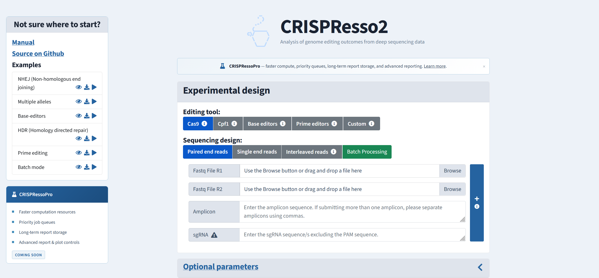
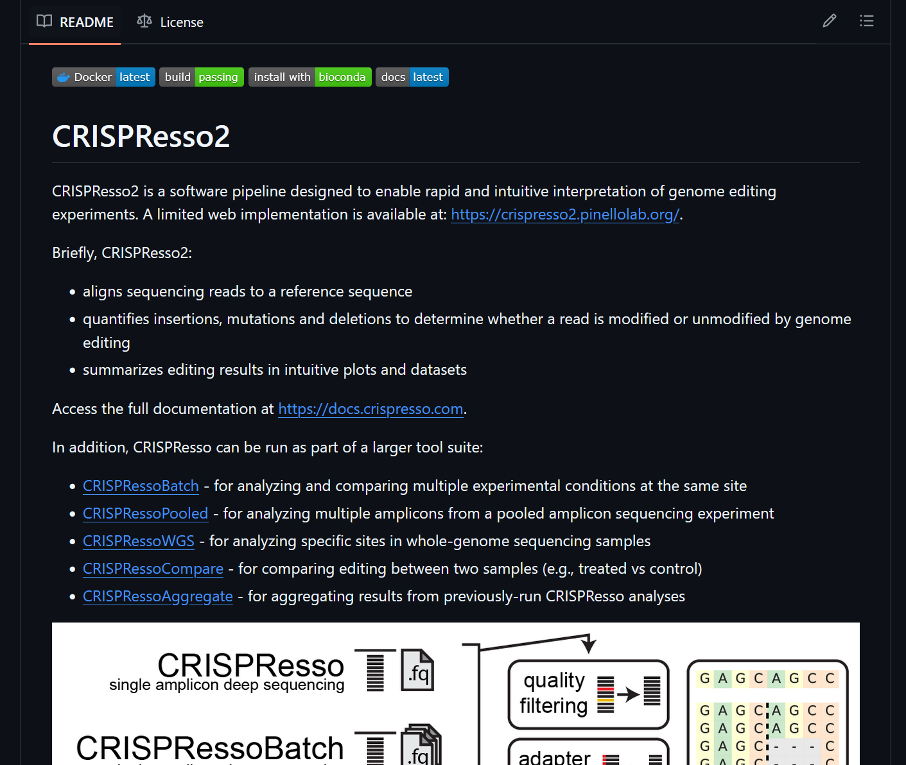
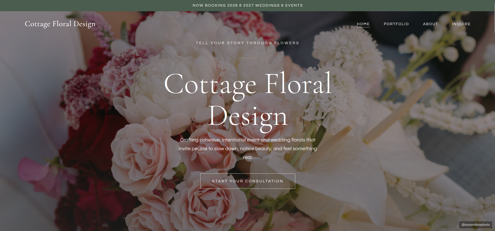
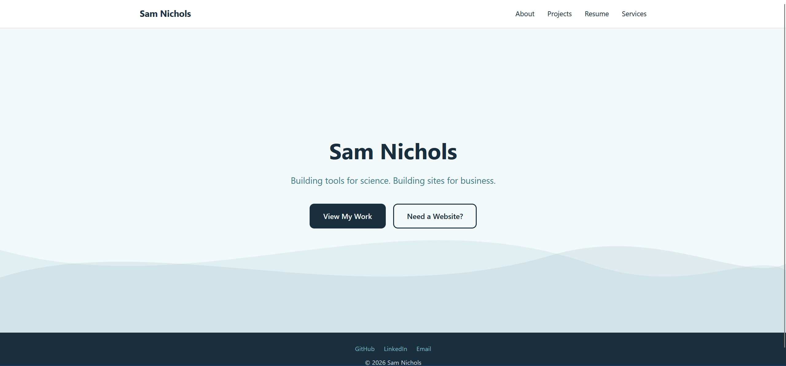

Projects
A selection of things I've built (or helped build) — from genomics pipelines to web applications.

CRISPResso Web
Flask-based web platform wrapping the CRISPResso2 CLI, providing a browser interface for genome-editing analysis with cloud-native AWS infrastructure.

CRISPResso2 CLI
Open-source command-line tool for the analysis of genome editing outcomes from CRISPR experiments, processing SAM/BAM sequencing data.
Legislink — available at legislink.us during the Utah legislative session
Civic tech platform enabling interest groups to share their positions with local legislators.

Cottage Floral Design
Responsive website for a local florist featuring their arrangements, services, and contact information.

samnichols.dev
This website — a dual-purpose personal site serving as both a developer portfolio and a freelance web design showcase, built with zero dependencies.